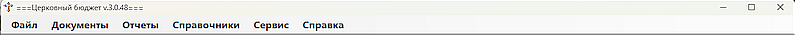

Описание пунктов меню |
|||
Меню программы содержит следующие пунктыПункт меню 'Файл' содержит подпункт 'Выход', который закрывает программу и делает резервную копию базы данных (далее БД). Пункт меню 'Документы' содержит подпункты 'Новый доход', 'Новый расход' и 'Ввод начальных остатков' - для создания документов дохода (расхода) данной Епархии, а также ввода остатков на начало периода (в основном начала года). Пункт меню 'Отчеты' содержит подпункты 'Список документов', 'Кассовая книга' (пока не реализован в данной версии) и 'Финансовый отчет' - которые отображают список созданных документов (при применении фильтра можно отобразить либо все документы, либо определенный вид: Доходы, Расходы, ПКО, РКО), выбранные за определенный период и предназначенные для просмотра и распечатки, а также Кассовой книги (планируется) и Финансового отчета (за определенный месяц или за год). Пункт меню 'Справочники' содержит подпункты Справочников, о которых говорилось ранее (а именно: Организация, Сотрудники, ИД документы, Виды ИД документов, Категории доходов, Категории расходов, Типы документов, Константы. Пункт меню 'Сервис' содержит подпункты 'Архивирование БД', 'Восстановление БД' и 'Очистка БД (с параметрами)', которые позволяют в любой момент сделать резервную копию БД (принудительное архивирование производится при выходе из программы), восстановить из резервной копии рабочую БД (эта операция может заменить действующую БД со старыми данными, так что выполнять данную операцию следует с осторожностью), и функция очистки БД для работы с новым приходом или передачи в новый приход (есть вариант очистки документов, документов и справочников и полной очистки, оставляя категории доходов и расходов, константы). Пункт меню 'Справка' содержит подпункты 'Справка по программме' (данное руководство) и 'О программе', которые помогают получить справочную информацию о работе с программой и основные сведения о программе.  Рис. 1 - Меню программы Структура меню |
|||
|
По вопросам: viruss954@gmail.com |
|||